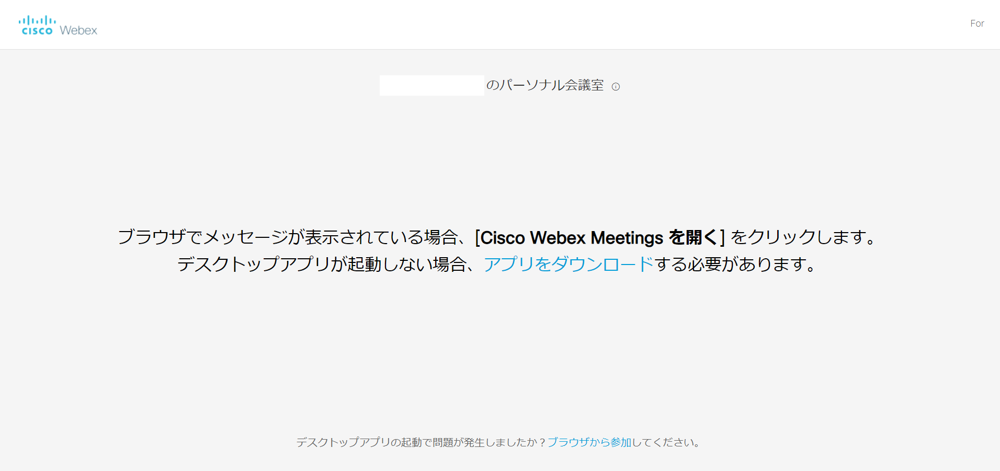
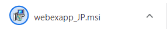
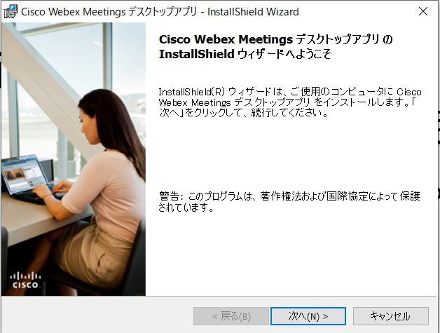
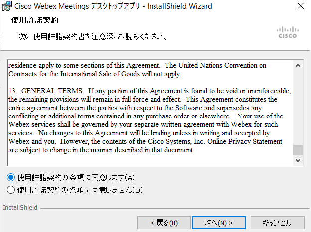
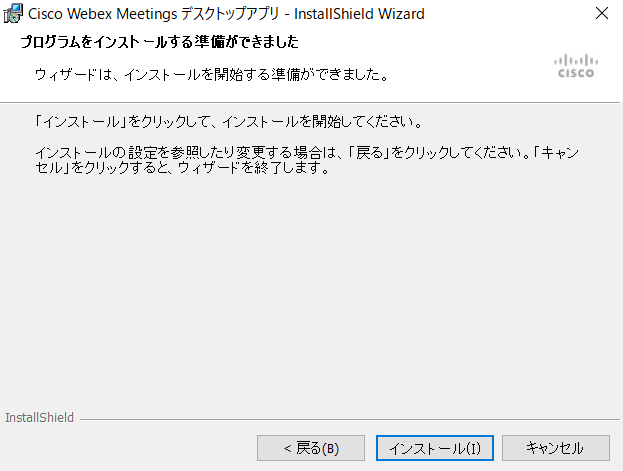
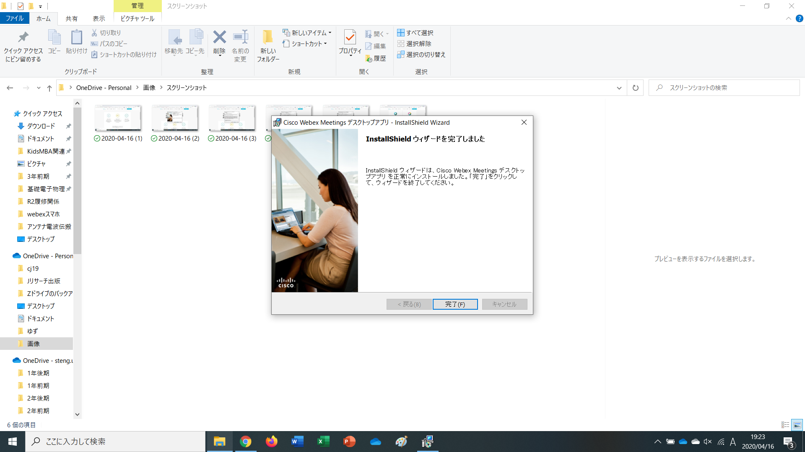
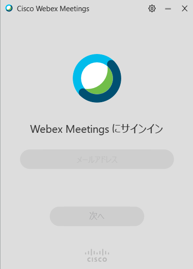
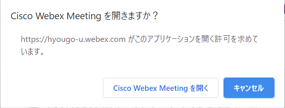
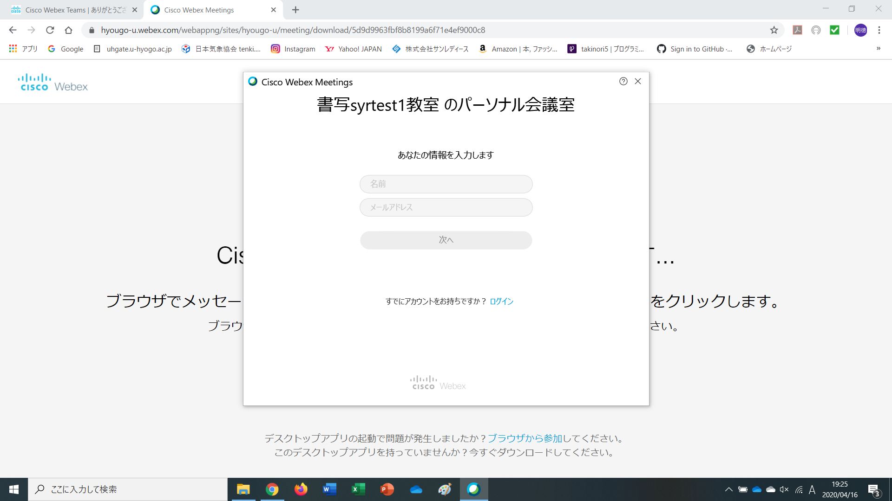
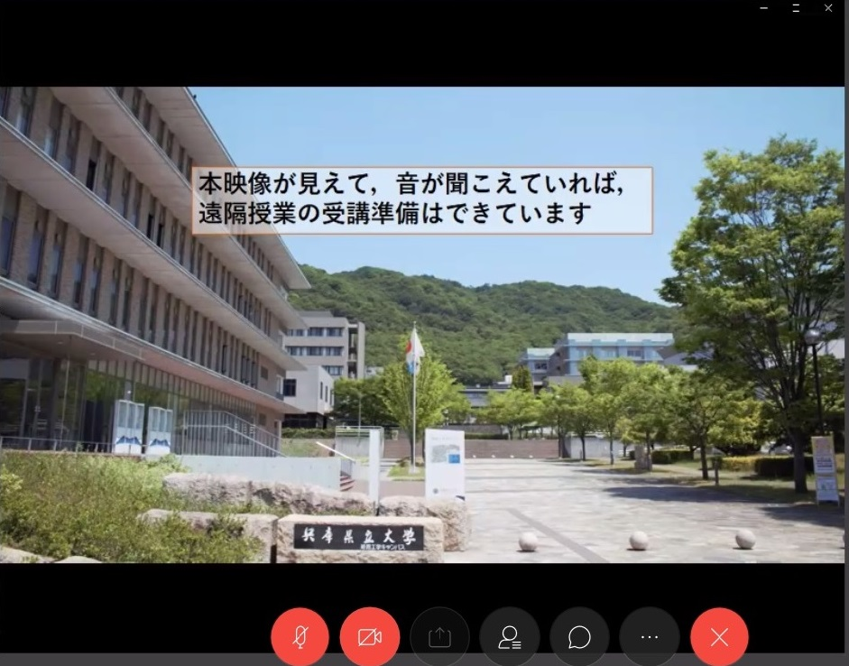

<!DOCTYPE html>
<html>
  <head>
    <link rel="stylesheet" href="stylesheet_1.css">
    <meta charset="utf-8">
    <title>Webexの準備方法（Windows10版）</title>
  </head>
  <body>
    <!--<h3>Webexの準備方法について（Windows10版）</h3>
    <p>大学で使われはじめるWebexについて、準備の方法を説明していきます。今回はパソコン（Windows10）を使う場合についてです。</p>
    <p>（更新）こちらでは、デスクトップ版アプリをダウンロードして使用する方法を説明しています。ブラウザ版を使用される場合は、大学側から掲示がありますので、そちらも確認してください。</p>
    <h4>１、Webexに必要なインターネット環境の整備</h4>
    <p><a href="https://akino999.github.io/notice200413.html">スマホ・タブレット版</a>と同様です。</p>
    
    <h4>２、cisco Webex Meetingsのダウンロード</h4>
    <p>Webexはブラウザ版でも利用できますが、デスクトップアプリ版を利用することをおすすめします（毎回のサインインが初回のみで済む、動作がサクサクするなどの利点がある）。<a href="https://www.webex.com/ja/downloads.html">こちら</a>からダウンロードできます。下の画像の左側のアプリです。</p>
    
    
    <p>ダウンロードを押すと、左下にダウンロード状況が表示されるようになります（下図はGoogle Chromeを使用している場合）。Internet ExplorerやMicrosoft Edge、Mozilla Firefoxを使用している場合は、ダウンロード前に、開くまたは保存しますか？のデロップが出るので、「保存」をクリックします。</p>
    
     
    <h4>３、アプリの準備</h4>
    <p>ダウンロードが完了したら、左下のダウンロード状況のところをクリックし、アプリを開きます。Internet ExplolerやMicrosoft Edgeの場合は「ダウンロードが完了しました」と表示されるので「開く」をクリックします（※「ファイルを開く」ではないので注意してください）。アプリが開けば下図のような画面になりますので、「次へ」をクリックします。</p>
    
    
    <p>利用許諾契約を読み、「同意します」にチェックを入れ、「次へ」をクリックします。</p>
    
    
    <p>次のような画面になったら、「インストール」をクリックします。このときに、セキュリティ通知が出たら許可しておきましょう（「はい」をクリックします）。</p>
    
    
    <p>アプリのインストールが完了したら、次のような画面になるので、「完了」をクリックします。</p>
    
    
    <p>「完了」が押されると、次のような画面になりますが、いったん閉じます。</p>
    
    
    <h4>４、遠隔授業のテスト</h4>
    <p>最後に、遠隔授業ができるかどうかをテストします。<a href="http://www.eng.u-hyogo.ac.jp/">工学部のホームページ</a>にWebexのリンクが貼られているのでそちらにアクセスします。すると、次のような画面になるので、「cisco Webex Meetingsを開く」をクリックします（ブラウザによっては自動で開くことがあります）。（ユニバーサルパスポートのリンクからWebexを開くと、アプリのダウンロードを再度要求されるなど、うまくいかないことがあるようです。このときは、リンクのコピー＆ペーストをお試しください。）</p>
    
    
    <p>アプリが起動されると下図のように名前・メールアドレスが要求されます。カメラ・マイクはオフにしておきます（他の人に音声・映像が届いてしまうため）。</p>
    <p>（追記）名前・メールアドレスともに大学側から指示が出たようなので、それに従ってください。</p>
    
    
    <p>下の画面になり、音声が出力されてれば準備は完了しています。どちらかがうまく出力されてない場合は、音量や通信速度等を確認してください。</p>
    -->
    
  </body>
</html>
